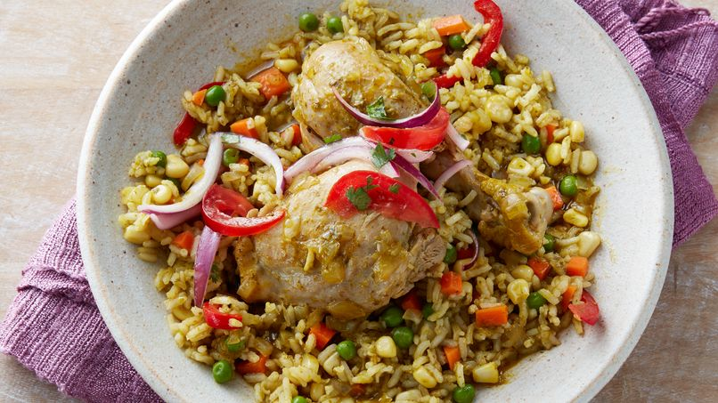
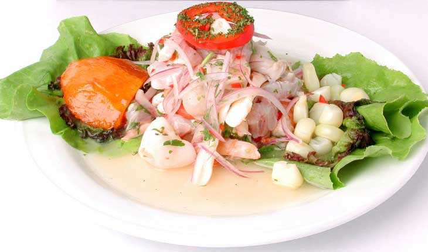

Arroz con Pollo
La historia de este peculiar y conocido plato, no es muy extensa, el “Arroz con pollo peruano” es un derivado del “Arroz del pato” (plato peruano, originado en Chiclayo-Perú), por los años 1900 hubo una escasez de pato, lo cual llevo a la población limeña a empezar a criar pollos, ademas que el criar pollo resultaba mas económico, lo cual perduro hasta el día de hoy, esto hizo que la servidumbre y personas encargadas de la cocina, tengan que reemplazar el pato por el pollo al momento de preparar el típico “Arroz con pato”, y un ingrediente primordial en el Arroz con pato, la “Chicha de jora”, es una bebida del norte peruano, desde hace muchas generaciones atrás, esta bebida, debido a que no era tan fácil para trasladarla hasta la capital, fue reemplazada por la cerveza, lo cual no dio problema alguno.Y es así como es que nace el conocido “Arroz con pollo peruano”.
Ceviche
El ceviche es sin lugar a dudas el plato de bandera del Perú. Es la comida que mejor nos representa, y que destaca en las diferentes ferias gastronómicas que se realizan alrededor del mundo, en donde está presente la comida peruana. Es un plato que se prepara con pescado o mariscos crudos cortados en trozos, y que lleva jugo de limón, cebolla picada, ají y sal. Se acompaña con camote, choclo, cancha serrana o chifles ( en el norte del Perú). En el año 2004 el ceviche fue declarado por el Instituto Nacional de Cultura (INC) como Patrimonio Cultural de la Nación, al considerársele uno de los principales platos del Perú. En el año 2008 fue declarado el 28 de Junio de cada año como el “Día del Ceviche” en todo el Perú.